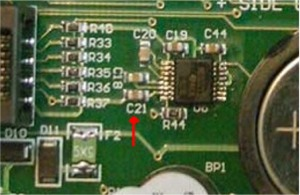
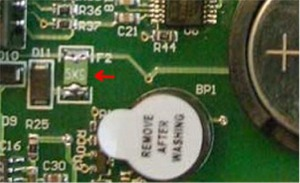
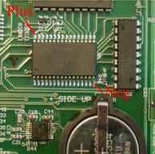

Frequently Asked Questions about Gemini 1
Questions
Click on questions to go to answer
|
1. Warning about parking the mount and leaving power on.
|
2. Why does the Gemini Stop and wait for startup
instructions if the hand controller is not present?
|
3. What is a ground loop and how can you test for
one?
|
4. How do you disable the Gemini
modeling, to use T-Point or ACP
|
5. Is it possible to use more than one
USB-serial adapter at one time on a laptop?
|
6. How do you install the ASCOM Driver in
TheSKY6?
|
7. How do you determine the COM Port of a
connected USB to Serial Adapter and change it?
|
8. What is the different between the old
and new autoguider ports?
|
9. How do you get Windows 2000, XP, Vista
& Win7 to show all the COM ports that have been allocated?
|
10. What are the changes between L4V1.02 and
L4V1.04 EPROMS?
|
11. How do you determine if the RS232 chip in
the Gemini is bad?
|
12. Can you run the Gemini without the motors
connected safely?
|
13. What will cause the Gemini to shut down the hand controller?
|
14. What does the red dots on
the hand controller mean during boot?
|
15. How do you measure the CMOS RAM chip battery
voltage and partial schematic?
|
16. How should the guide cable from a
ShoeStringAstronomy GPUSB be wired for the Gemini 2 or Gemini 1?
|
17. How to test the Gemini-1 guider input circuit.
|
18. What type of Battery does the Gemini 1 and Gemini-2 units use?
|
19. Suggested replacement for the hand controller cable for Gemini-1.
|
|
|
20. Extending the battery life of the 3V battery in an Gemini-1.
This will also possibly help fix CMOS resets. This is a copy of message 3584 from the Gemini_Users Group.
|
21. Some sources of the Gemini-1 Power plug.
|
22. What does it take to add a second communication port to the Gemini Controller.
|
|
|
|
Answers
|
| |
1. Warning about parking the mount and leaving power on?
|
Answer: WARNING: The Gemini-1 has several Startup modes. If is your habit of
leaving the Gemini-1 powered on and parked, when not in use, then you
should always make sure that you use one of the two options below. This
is because if you have a power failure, and then power is restored, and
the mount is in Cold Start, Warm Start, or Warm Restart, then the RA
motor will start running at the tracking rate set, and can possibility run your telescope into
your roof, or a limit, without you knowing it until too late:
1. Set your startup mode to "ASK IF POSSIBLE." or
2. Put the telescope into
terrestrial mode tracking after parking. Just remember to switch it back to Sidereal mode when starting
up again. This is the safest option.
|
2. Why does the Gemini Stop and wait for startup
instructions if the hand controller is not present?
|
|
Answer: The Gemini unit has to have either the hand controller or an
external computer to tell it which mode to boot in. When the Gemini initializes,
it looks to see if a hand controller is connected, or some other type of
communications adapter is connected to the DB15 pin connector. If it
detects a hand controller, then it will go ahead and send out the display
commands to the hand controller. If a hand controller is not present, or a
Second Serial Port adapter is present, then the Gemini will stop and wait for a
signal into either the normal RS-232 port or the Second Serial Port, to tell it
that a computer or PDA or some kind of controlling device is present. The
controlling device has to be able to tell the Gemini what mode to start up in.
|
3. What is a ground loop and how can you test for one?
|
Answer: A ground loop is a difference of potential in voltage between connected devices. It is normal to have a small difference due to the resistance in cables and connectors. However it should not be more than 1 volt in practice. Here is a good article that explains ground loops:
Ground Loops Article
Answer for how do you test for one.
Ground loops and power supplies are tricky thing.
Take these steps to find out if you have a possible ground loop.
1. Turn off all power supplies. Leave the power supplies plugged into the
house current.
2. Disconnect all power supplies from the Gemini and camera. Leave the
one to the computer plugged in.
3. Measure with an ohm meter between the Gemini power pins of the VCD
OUT GND pin (see page 131 of L4 manual) on the Gemini to the Ground pin
of the Camera and then a ground spot on the Computer. Also measure
between the camera and computer. A reading of NO ohms would be perfect.
Any low reading could mean you might have a ground loop. This means that
the power supply input is not isolated from the power supply output.
4. Next turn all power supplies on. Measure for voltage between the
ground outputs to each other.
A zero reading is good. anything above 1 volt is bad. Voltage between
0 and 1 volt can also be bad, but depends on how large you wires are.
Remember that you are doing this with no/very little current flowing.
5. Reconnect the camera, Gemini and computer. do step 4 with them
connected. and see what you have.
They should not have changed much. Again voltage between the units is a
bad thing.
Computers can cause ground loops because they normally get connected to
many other powered devices like monitors, networks and printers through
wires.
The best way to eliminate ground loops is to have all the neutral
(ground) DC output of every device tied to a central point,
through a heavy (12 Gauge) wire. The central point when using a Gemini
would be the Gemini ground input pins. This is not easy to always do.
The next best is opto or magnetic isolated inputs to the Guider and
RS232 inputs.
If you do do a central ground between your devices, consider putting in a
ground rod at least 8 ft deep next to the central point into the
ground. This can help prevent static damage.
The best preventive is to use Isolated RS232 or USB adapters and Guiders into the Gemini.
They can eliminate ground loops. I use one on all inputs to my Gemini. Of
course I manufactured my own.
One word on note: The Gemini's with the slide switch for power do not have the electronics grounded to the case. The Gemini's with the Toggle switch do have the electronics grounded to the case.
|
4. How do you disable the Gemini modeling, to use T-Point or ACP
|
Answer: If using the ASCOM driver for your mount? Go into the driver setup and click first on the "Modeling Parameters"
button. This should show all zeros. If it does not, click on "Clear Parameters"
and store the clear out in your Gemini. Now go back to the main setup window and
click on "Advanced Setup". In the top right of the window that opens you should
see a check box with "Sync Mode Affects Model (Additional Align)". Make sure
this is UN-checked. Otherwise every time you do a sync you will be adding to a
Gemini model which would adversely interact with the TPoint model. While you are
in there, uncheck precession and refraction calculations, as TheSky does this
itself.
|
5. Is it possible to use more than one USB-serial adapter at
one time on a laptop?
|
Answer: Yes. You can use as many as you have USB ports. Please note that each
one will be assigned a Serial port number according to which one is plugged into which
port. Each USB to Serial Adapter has a unique serial number. So lets say that your
first RS-232 adapter has serial number 2001 and your second has serial number 4001.
Lets also say that you have 3 USB ports on your laptop called 1, 2 and 3.
Now lets say that you plug RS-232 #2001 adapter into USB port 1. The computer might
assign it Com port 3,
Now lets say that you unplug adapter #2001 and plug in adapter 4001 into USB port 1,
The computer might assign it to Com 4.
Now lets say that you plug adapter #2001 into USB port #2. The computer might assign
it to Com 5.
As you can see, XP uses the adapters serial number and which USB port to assign the serial ports.
My recommendation is mark each adapter to which USB port you are plugging it into, and
always use the same setup. That way you will continue to use the same predictable COM
port setting.
|
6. How do you install the ASCOM Driver in TheSKY6?
|
Answer: If you downloaded the
TeleAPI package from the ASCOM web site, Downloads
section, Plugins, the zip file you have contains a ReadMe file that says:
This plugin allows Software Bisque's TheSky to communicate with
ASCOM-compliant telescopes via TheSky's "TeleAPI" feature.
Installation
- Rename the file C:\Program Files\Common Files\System\TeleAPI.dll
to TeleAPI-Original.dll
- Copy the ASCOM TeleAPI.dll to C:\Program Files\Common Files\System\TeleAPI.dll
One-time Telescope Setup
- In TheSky, Telescope menu, select Setup...
- In the Control System box, select "Telescope API"
- Click Settings... to open the ASCOM Telescope Chooser and
select the ASCOM compliant telescope you wish to use.
- Now click Properties... in the Chooser, which will display
the settings window for the telescope type you just chose. Make
adjustments as your telescope needs.
- Close all windows including the TheSky Telescope Setup
window by clicking OK or Close. Do not click any Cancel buttons.
Operation
- Make sure both your telescope and TheSky are set for the same
geographic location and time.
- In TheSky, Telescope menu, select Link->Establish. You should
see the cross-hairs indicating where the telescope is pointing.
- Please follow steps (1) and (2) exactly. The file does not go into "The Sky 6
folder in the program files"...
Also please see "Working
With TheSky" on the ASCOM site (the link is in the
text describing TeleApi) at
http://ascom-standards.org/FAQs/TheSky.htm
(the above steps are a direct quote from Bob Denny in the
ASCOM-Talk Users Group).
|
7. How do you determine the Com Port of a connected USB
to Serial Adapter and change it?
|
Answer: These instructions work only for Windows XP.
- First click on the Start Tab at the bottom left of the screen.
- Then in the menu that pops up, Right click "My Computer",
then scroll down and select "Properties." You should now have window up that
says "System Properties".
- There is a "Hardware Tab," click that. You now have several
selection buttons, click the one that says "Device Manager" This will bring up
a window that has a list of all the hardware in your computer.
- Scroll down to the one that says Ports(Com & LPT). Click on the +
sign to the left. (this will open the list of ports. If you have a USB to Serial Adapter
plugged in and powered up, you should see it in the list. Double Click on it.
- This will open a box that has Several Tabs across the top. Select the
one called "Port Setting" This is where you can set the Communications baud
rate data bits etc.
- Click on the button that says "Advanced..." A new window
will open labeled Advanced Setting for Com(number of what the port is presently).
- At the bottom you will also see a selection box label "Com
Port Number" If you click on this you will see a list of all your COM ports and
if they are empty or not.
- You can assign the USB to serial Adapter to any of the empty ports
safely. Assigning it to a used port will give a warning message that this port is
already in use. Only assign to a used port if you are completely sure that it is
no longer being used. Close all windows.
|
8. What is the different between the old and new
auto-guider ports?
|
Answer: Directly from the manual:
4.2.1 The Autoguider Port.
IMPORTANT: There are two different versions of the Gemini Autoguider
port hardware. The versions can be distinguished by the type of
connectors used for the motor cables. The older Gemini version uses
RJ-45 modular connectors, and the newer version uses 6-pin DIN
connectors. The primary difference between the versions is that the
older Gemini Users Manual version 4.1 paragraph 4.2.1 says the
guider port does not directly support autoguiders with TTL output,
but the newer version does.
Gemini contains a separate Autoguider port � a 6-pin modular RJ-11 socket located
below the 15-pin connector to the left. It contains a common pin, four directional pins
and one pin that is controlled by the alarm signal that can be used for shutter control. The
common pin of the RJ-11 modular connector is connected to +5V on the older version of
Gemini, and GND on the newer version. The 4 directional inputs must be connected to
the common pin to be active (they are active at High potentials on the older version of
Gemini, and at Low potentials on the newer version). Simultaneously activating opposing
directional signals (DEC+ and DEC- or RA+ and RA-) will be ignored and displayed as
�Autoguider Error.�
Note: The autoguider port is only active in the Photographic Mode and All-
Speeds Mode of the Gemini system. Selecting the Visual Mode disables Guiding
and therefore the Autoguider Port.
More from the manual:
4.2.2 Manual Guiding
Manual guiding is usually done using an eyepiece with an illuminated reticle attached to
an off-axis guider or separate guidescope. You center a star (or the object being
photographed) in the reticle and use the buttons on the Deluxe Hand Controller to apply
guiding corrections to keep the star on the reticle throughout the duration of the exposure.
Rather than using the Deluxe Hand Controller, you can instead guide with a Losmandy
Standard Hand Controller plugged into the autoguider port. The LED of the Standard
Hand Controller will not normally be lit, but will light up anytime the alarm sounds.
Using a Standard Hand Controller in the autoguider port has a big advantage for manual
guiding, in that accidentally pressing opposite directional buttons simultaneously will not
result in movement at centering speed, as happens with the Hand Controller in its normal
socket, or when using the Deluxe Hand Controller. This reduces the risk of spoiling a
long exposure photograph due to an accidental key press.
In either case, you will need to make sure that the Hand Controller is set to either the Photographic or All-Speeds Mode.
4.2.3 Connecting an Autoguider to an Older Gemini:
4.2.3.1 Connecting an Autoguider with Relay Output
Autoguiders with relay outputs (such as the SBIG ST-4) can be connected to the Gemini
system directly. Simply connect one side of each of the four relay contacts to the
Autoguider input common pin, and connect the other side of each relay to the appropriate
direction input pins of the autoguider port. Cables are available for most compatible
autoguiders to plug directly between the autoguider and Gemini.
Gemini Users Manual
42
4.2.3.2 Connecting an Autoguider with TTL Output:
The typical "open collector" output stage (e.g. the ST-7/8/9/10, user-modified ST-4) has
high impedance while inactive and pulls down the direction signals to a common ground
when active. This is exactly the opposite of the way the Hand Controller and autoguider
ports of the older version Gemini system work.
A relay (or optocoupler) decouples the switching device (the Autoguider) from the
controlled device (the Gemini), thereby avoiding a direct connection between the two
systems and protecting both systems against high currents that could cause damage.
IMPORTANT NOTICE:
(1) Never connect TTL output stages directly to the Hand Controller or autoguider ports
of an older version Gemini! Severe damage may occur to the connected devices. Use a
Relay Box (as provided by SBIG) or the optional Losmandy Optocoupler unit instead.
By so doing, you get the additional advantage of providing electrical protection to these
sensitive units.
(2) The use of two separate power supplies without a coupler unit is strongly
discouraged. To do so would connect the ground of one system to the supply voltage of
the other system, causing the two grounds to be at different potentials. If the grounds of
the two systems are then connected, severe damage is likely to occur.
Detailed instructions for connecting an SBIG camera with TTL outputs to the older
version of Gemini can be found in Appendix 8.6 (Autoguider Port).
4.2.4 Connecting an Autoguider to a Newer Gemini
The Autoguider port on the newer versions of Gemini is plug compatible with a large
variety of autoguiders. You can use an autoguider with relay outputs such as the SBIG
ST-4 and STV or an autoguider with TTL outputs such as the SBIG ST-7/8/9/10 directly
using the appropriate cable. Use SBIG�s �TIC� cable for the ST-4 and STV, and SBIG�s
�TIC-78� cable for cameras with TTL output.
The SBIG relay box can be used, but is not necessary. The Losmandy Optocoupler is not
compatible with the newer Gemini.
Also Note that the Common pin is not ground on the Newer style Gemini's. It is pulled to ground through a 100 ohm resistor.
All the guider inputs are pulled to +5V through 3.3K ohm pullups.
I highly recommend the USB Guide Port interface for OLD Gemini
called GPUSB-AH from
http://www.store.shoestringastronomy.com/products_gp.htm if you
have the older version of the Gemini-1 boards, which have RJ-12
jacks for motor connectors. You will also need the correct
guide cable to go with it. The one supplied by S-Big if you
have a SBig camera will not work.
|
9. How do you get Windows 2000, XP, Vista & Win7 to
show all the COM ports that have been allocated?
|
Answer: Windows does not normally show non-connected devices in device manager. This is even true if you turn on show hidden devices under the view tab. Before you do this change, be for warned - that this will let you modify/delete devices that you might not want changed or deleted. You do this at your own risk!. With that said here is a step by step process. You can also see how to do this on the Microsoft's web site at:
http://support.microsoft.com/kb/241257
For 2000 and XP:
- Right mouse click on My Computer and select Properties.
- Select the Advanced tab.
- Select the "Environment Variables" Button at the bottom above the "Ok" Button
- In the "Systems Variables" box select "New"
- A box will Popup that has 2 entry blocks.
- In the Variable Name: box enter devmgr_show_nonpresent_devices
- In the Variable value: box enter 1 then click the OK button , then click the OK button on the bottom of Environment Variables.
- Close the Hardware manager, and System Properties windows.
- Use step one above to reopen System Properties and select the Hardware tab.
- Select the Device manager.
- Under the View menu, select show hidden devices.
- Under Ports you should see all the devices that Windows has allocated now. You can modify them and delete them if you need, but please be careful what you delete.
For Vista/WIN7:
- Click in the Vista Balloon at the bottom of the page.
- Right mouse click on Computer and select Properties.
- Select Advanced System Setting. If you are asked for permissions hit continue.
- Select the "Environment Variables" Button at the bottom of the page
- In the "Systems Variables" box select "New"
- In the Variable Name: box enter devmgr_show_nonpresent_devices
- In the Variable value: box enter 1 then click the OK button , then click the OK button on the bottom of Environment Variables.
- Close the the windows until you are back at the Control Panel System.
- Select Device Manager
- Under the View menu, select show hidden devices.
- Under Ports you should see all the devices that Windows has allocated now.
You can modify them and delete them if you need, but please be careful what you delete.
Another way to do this is:
The trick was to open the Command Prompt as administrator and
start the Device Manager from the same command prompt.
- Right-click “Command Prompt” in Accessories and choose “Run as Administrator”
- Enter “set devmgr_show_nonpresent_devices=1″ – without the quotes obviously
- Enter “start devmgmt.msc”
- In the box that opens, select “Show hidden devices” in the ‘view’ menu.
Now if you expand the section on COM ports, all the COM ports
that have ever been created will be displayed, the non present ones being in grey.
You can uninstall away anything that you don’t want (right click, select
uninstall).
"http:/www.fettesps.com/how-to-remove-com-ports-which-are-in-use/
|
10. What are the changes between L4V1.02 and
L4V1.04 EPROMS?
|
Answer: This version has the following updates over L4V1.02:
- Test for a defective autoguider input chip. Symptom: Gemini freezes after GPS readout.
V1.04 checks this condition, a warning is displayed and operation is continued even
if the chip is defective. A clearer explanation: Some brands of cameras, when un-powered
and connected to the Gemini's auto-guider input, causes the autoguider chip/IC to give
a failed condition on power-up of the Gemini., This does not mean that your Gemini is bad.
It just means that there are unexpected inputs on power up. So don't send you Gemini back
to Losmandy please. However if you are getting this message with nothing attached, then there is a very good possibility that your Auto-Guider chip is bad, and then you would want to contact Losmandy.
- Test for a defective serial port driver chip. A warning is displayed.
- PEC counter is restored correctly at a Warm Restart.
|
11. How do you determine if the RS232 chip in the Gemini is bad?
|
|

Answer: Please read all this paragraph before
attempting to test. The problem is normally with the
negative voltage pump in the IC. This normally only takes out
the transmit side of the chip (sending signals to the PC) and leave
the receive side good. So if you cannot connect to a PC, but can
connect a GPS, and receive GPS updates, this is a good indication
also the negative voltage pump is bad. The sure fire test requires
voltage testing. You
can check this out if you have a good Voltmeter. Please do this only if
you feel comfortable doing this as you do it at your OWN RISK. The cap number is
C21 in the newer boards with the round motor cables. Measure across this cap
with you voltmeter with the Gemini powered up. It is best if you have a
friend do the meter reading while you hold the leads. Micro-leads is
highly recommended for this. The lead closest to the IC is the negative
lead. The side closest to the RJ22 connectors is the ground side. This cap
comes off of Pin 7 of the IC, which should be marked with 3221 if I remember
correctly. If you do not get a 5 Volt reading or close to that then the IC
has gone bad (or been put to sleep, see note below) and needs to be replaced. The Gemini is sensitive to
ground loops, and they can take this IC out. This has been the
problem in all the cases I have found except one. That had a bad cap and broken trace.
Please NOTE that
this chip has an auto sleep mode that can also shut down the transmit part of the IC. If the
IC has shut down the transmit part
of the IC to save power, this voltage will also measure zero. To wake up the IC,
ask the Gemini to get GPS data, or send it a command
such as trying to connect using GCC. Any command that requires the Gemini to send a reply should wake the IC up.
Also note:
|
12. Can you run the Gemini without the motors connected safely?
|
Answer: Yes you can power up the Gemini without the motors connected. You will get motor stall/stopped errors. You can stop these errors by putting the Gemini in the terrestrial mode.
Setup->>Mount Parameters->>Tracking Speed->>None/Terrestrial.
|
13. What will cause the Gemini to shut down
the hand controller?
|
|

Answer: Micro Resettable Fuse F2 for
Gemini. This fuse is a resettable fuse that protects the +5V circuit. If it
drops to much voltage, the processor will shut down the +5V power supply in the
controller. A symptom of this is the Gemini turning off the hand controller when plugging in a RS232
device into the RS232 Jack, or a Guider into the Guider Jack, or a GPS into the
Feature Port. Basically anything that causes more +5V current drain can cause
this symptom with a bad fuse. In the older Gemini's it was Green and marked X14. If your fuse is marked X14 and normally green in color, then you have the older
fuse. The fuse shown in the picture is the newer higher rated fuse, but still
green in color. It can be black in color and be the correct higher rated
fuse. This was a
known problem (according to René Görlich's) and later units was shipped with the
higher rated fuse to prevent this from happening. All units shipped with
the rocker switch should have the newer fuse.
|
14. What does the red dots on the hand controller mean
during boot?
|
Answer: The characters at boot time indicate the boot
progress and conditions
detected.
1st dot: internal resources and display initialized
2nd dot: power good, voltage stabilized
3rd dot: SRAM accessible (otherwise "SRAM failure !" will be displayed)
X: the content of the SRAM was reset to default values.
R: RTC was reset ("RTC malfunction" displayed if RTC is not
working)
4th dot: RTC initialized
5th dot: SRAM values loaded.
"AG port defect ? " will be displayed if one or more AG signals are active.
The X is to be expected after a version change, battery change, at low
battery voltage and so on.
Once it appears, a "CMOS reset" string is appended to the startup
message, too.
Since the initializing is done by the same subroutine as used by the
Setup...Reset Defaults menu point,
there is no need to take the battery out to renew the SRAM content.
A side effect of pulling the battery out is that the RTC chip will stop
working after a while and may then be
initialized at the next startup. In case of problems you may first check
and maybe set the UTC date and time and the ALARM time, too.
|
There is a unused connection from the battery to an analogue input pin
of the CPU to check the voltage - R32 was removed since the CPU chip
drew some current from the battery while being powered off, shortening
battery life.
The above answers are a direct quote from René
Also there is another known problem, which is C3 a 4.7uf 10Volt
cap directly above the processor. This cap is what resets the Gemini processor
at power up.
It is suppose to hold the Processor in reset while the power stabilizes. If it
is not holding the processor in reset long enough, then the processor might not
be starting up correctly. A quick test of this is to take a pair of fine
needle nose-pliers/tweezers and short across this cap for about 1/2 sec. Then
remove the pliers/tweezers. If the Gemini then boots ok, it could be an
indication that this cap is loosing it value, or it's pull-up resistor R45 (a
10K) value has also changed. This cap has also been known to break loose from the
circuit board.
|
15. How do you measure the CMOS RAM chip
battery voltage and partial schematic?
|
|

Answer: You would need a voltmeter to measure
across pins 16 and 32 of the Static Ram chip. This is done with power
off, and power disconnected from the Gemini. It would be safer to
disconnect everything from the Gemini.
Again, you do this at your own risk.
You should measure a voltage above +2.8 VDC If you measure less than that
you probably have a bad battery, or one of the steering diodes has gone out.
If you power on the Gemini this voltage should jump up to +5VDC. If either
of the voltage measurements are not correct, it is probably the steering diode
D1 (BAT54C Schottky diode). If both is bad then it has to be the Steering diode D1 or
C8 a 0.1uF cap has shorted.
Of course the Ram chip could also be bad, and pulling the voltage down. |
 Note
that R32 and U21 are not on the PCB. The bottom part of the
schematic to the left is the Static Ram Chip U9 which is also
pictured extreme left on the PCB. Note
that R32 and U21 are not on the PCB. The bottom part of the
schematic to the left is the Static Ram Chip U9 which is also
pictured extreme left on the PCB.
All of the +VB connect together. VCC is +5V.
Also note that the battery type in the schematic is shown as
CR2354 but the schematic is the same for units with battery type CR2032. |
16. How should the guide cable from a ShoeAstronomy GPUSB be wired for the Gemini 2 or Gemini 1?
|
|
Answer: Here is a link to a wiring diagram provided with the permission if
ShoeStringAstronomy that tells how to make the cable that goes from the GPUSB or GPUSB-AH into the Gemini-2 or Gemini-1. Note that only the GPUSB is
compatible with the Gemini-2, or the Gemini-1 with round motor cables. Here is the link to the
guide_port_cables.pdf. |
17. How to test the Gemini-1 guider input circuit.
|
 Answer: Here is a schematic of the Gemini-1 input guider circuit. Note
this is for the Gemini-1 with round motor connectors.
It can be tested with a voltmeter. You can click on the image to get
a larger one. The input jack is on the right. There are
4 pull-up, one on each input lead that pulls the inputs up to about
+5 Volts. These inputs are feed to a hex inverter IC.
(74HC04) (In the Gemini-1 units with the RJ style motor connectors,
this IC is missing, and the leads go directly into the
microprocessor. Also the resistors are to ground instead of
+5Volts) Answer: Here is a schematic of the Gemini-1 input guider circuit. Note
this is for the Gemini-1 with round motor connectors.
It can be tested with a voltmeter. You can click on the image to get
a larger one. The input jack is on the right. There are
4 pull-up, one on each input lead that pulls the inputs up to about
+5 Volts. These inputs are feed to a hex inverter IC.
(74HC04) (In the Gemini-1 units with the RJ style motor connectors,
this IC is missing, and the leads go directly into the
microprocessor. Also the resistors are to ground instead of
+5Volts)
Now if you make a test cable where you can short each input going
into the Guider Jack, one at a time, to Guider Pin 2, and put a
voltmeter on the output side of the Hex inverter, you can test each
input to see if it is working. Lets say we short pins 2
and 3 together on the input. This would put a low signal level
on pin one of the IC U23. When this happens the pin 2 of this
IC should change from a low (around 0 volts) to something between 4
and 5 volts. If you do this to all the input pins one at a
time, and all the output are good, then the guider circuit is ok.
If none of the outputs change, then either the IC U23 or R42 is
open. You can test to see if R42 is open by using an ohmmeter
(with power off on the Gemini-1) and see if it measures 100 ohms.
If it does, then more than likely U23 has gone bad. Note: U23
is not an easy IC to replace. It is a surface mount IC.
The best way is to cut off the leads one at a time, then remove the
body, and then un-solder each lead. Do not use too much heat,
as you can lift the runs and also damage the runs that run under the
IC. It is best to let a professional do this. Hope this
helps eliminate your problems. |
|
|
|
18. What type of Battery does the Gemini 1 and Gemini-2 units use?
|
Answer: The Gemini-1 has used 2 different types of batteries. In any of the units that have a slide switch for power, the
Battery is a CR-2032. It the newer Gemini-1 units that use a
toggle switch for power, the battery is a CR-2354.
The battery
in the Gemini-2 is a CR-2354. This battery powers the Real
Time Clock and SRAM. After replacing this battery, you need to
power up the Gemini-2 and then set the time. When setting the
time, remember to do the store setting, or it will not be saved.
This is because the processor will drain the battery if this is not
done. It is a known flaw that is documented in the data sheet
for the processor that is being used in the Gemini-2 units. |
|
|
| 19. A suggested hand controller cable replacement for the Gemini-1.
|
|
Answer: A suggested replacement is available from
http://cablewholesale.com with part number 10D2-01210
|
|
|
| 20. Extending the battery life of the 3V battery in an Gemini-1.
This will also possibly help fix CMOS resets. This is a copy of message 3584 from the Gemini_Users Group.
|
Answer:
I (René) can offer a solution now.
Gemini's SRAM is not only used to store user catalogues
and the observation
logs, but also an amount of parameters and matrices used
for the modeling
algorithm. So it has a size of 128 KByte and is accessed
(also for writing)
very often, far exceeding size and reprogramming life
time of an EEPROM.
Normally, the Li CR2032 battery should last at least one
year and should
keep the SRAM content safe and the RTC running. If CMOS
Resets occur after
some minutes even with a fresh battery or battery
lifetime is significantly
shorter than one year, I recommend the following patch
for the electronically inclined:
1) Buy a small 39k resistor (with wires, not SMD)
2) Solder it between pin 2 (the second from above at the
left side)
and pin 9 (the down most at the left side) of the EPSON
real time clock
chip labeled U2. The left side of the RTC is next to the
SRAM chip U9.
You can do this on the component side or the soldering
side of the board.
Power Gemini on/off. Wait. The CMOS resets should be
gone.
3) Remove R38 to save Li battery power. Check again.
This was tested with three different
boards, one of them had CMOS Resets. All work fine.
Scott has put out a
movie on changing the battery.
|
|
|
| 21. Some sources of the Gemini-1 power plug.
|
Answer: These links was provided by Brendon on the Losmandy
Users Group
- The original was a Lumberg Plug Like
this
- An alternative is
this
- or
this
- or
this
- or
this in USA
|
22. What does it take to add a second
communication port to the Gemini Controller?
|
Answer:
This can now be done using the ASCOM Gemini.net driver. This driver has
the capability of supporting a virtual serial port driver (called a
Pass-Through port) such as
VSPE.
With this driver, you can add any non-ASCOM program and have it talk to the
Gemini in parallel with the ASCOM programs.
This question used
to be about the USB/RS232 Isolated to Gemini-1 HandController
adapter. These units are no longer being manufactured.
Here are some suggestions for Isolated adapters.
- USB to USB Isolated adapters:
- USB to RS232 Isolated adapter:
- You can also make your own USB cable that will plug into the
DB15 hand controller port and provide a second Virtual Serial Port
using a cable from
http://www.ftdichip.com. The cost should be less than
$50.00 including shipping. Please note that this cable
does not provide an isolated connection between the computer and
the Gemini-1. One of the Isolators above is still
recommended to use with it to prevent ground loops. The parts you will need are
these:
- A USB to TTL 5V Serial FTDIchip cable. Part number
TTL-232RG-VIP-WE available from
Digikey or
Mouser.
- A DB15 Male Connector with Solder cup
connections. From
Digikey from
Mouser
- A plastic D-Sub Backshell for covering the
connector. From
Digikey from
Mouser
- Some heat shrink to fit over the solder cup
connections.
- A short peace of wire.
- A good Soldering Iron, wire cutters and wire strippers,
and some way to heat the heat shrink.
- Here is the
instructions to make the cable.
|
|


{kind=link}